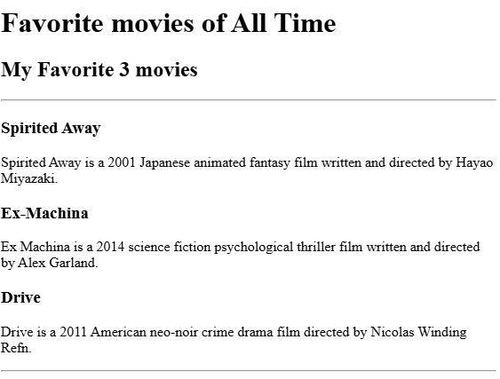

<!-- TODO 1: Create the HTML Boilerplate -->
<!DOCTYPE HTML>
<html>
<!-- TODO 2: Add Your previous projects' HTML into the public folder -->
<!-- TODO 3: Take screenshots of your project previews and add the images to the images folder -->
<body>
    <h1>Elizabeth Saragih's Portfolio</h1>
    <h2>I'm a Web Developer</h2>
    <hr>
    <H3>Project 1: Favorite Movie:</H3>
    <p>
        Code file: 
        <a href="./public/movie-ranking.html">
            movie-ranking.html
        </a>
    </p>
    
    <H3>Project 2: Birthday Invite:</H3>
    <p>
        Code file:
        <a href="./public/birthday-invite.html">
            birthday-invite.html
        </a>
    </p>
    
    <hr>
    <a href="./public/about.html">About Me</a> 
    <a href="./public/contact.html">Contact Me</a>
</body>
</html>
<!-- TODO 4: Add titles/subtitles etc. -->

<!-- TODO 5: Add a link to the project pages -->

<!-- TODO 6: Add images to show the project previews
HINT for TODO 6: You can use the height attribute set to 200 to make the image smaller:
https://developer.mozilla.org/en-US/docs/Web/HTML/Element/img#attr-height -->

<!-- TODO 7: Add the Contact Me and About Me page links -->